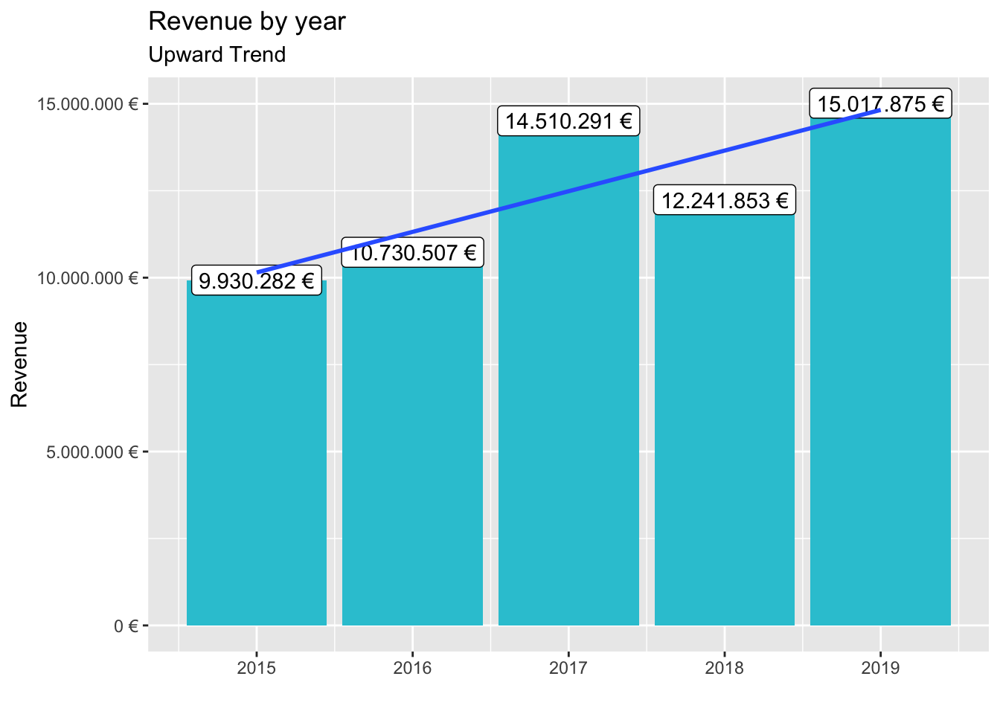
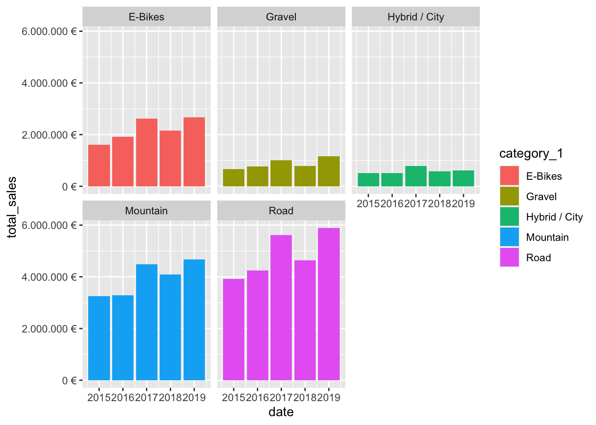
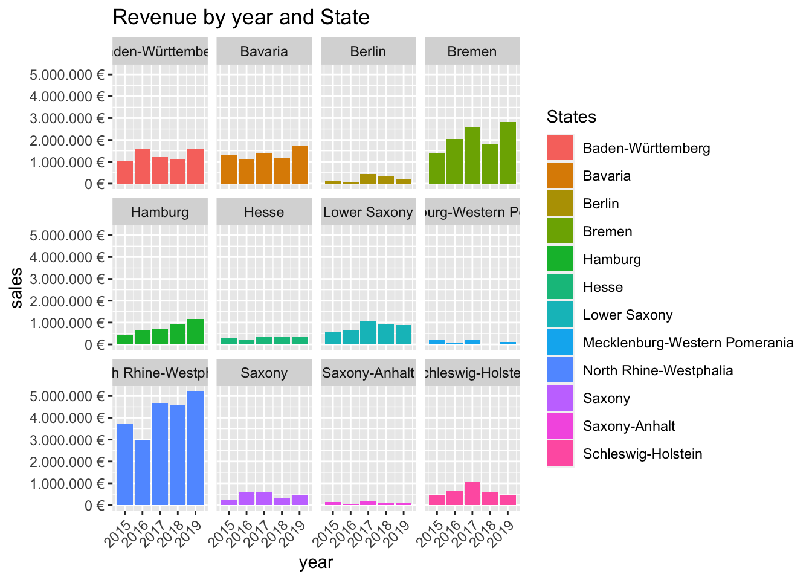
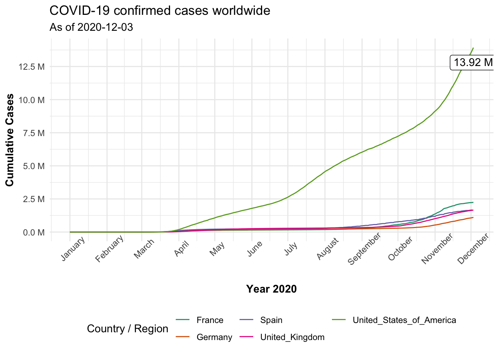
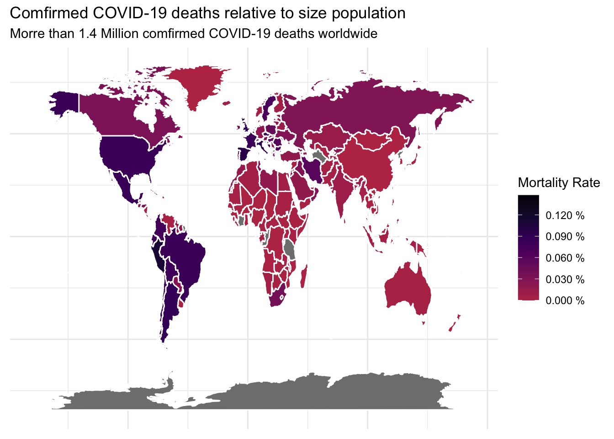

# SALES ANALYSIS ----
# 1.0 Load libraries ----
library(tidyverse)
library(tidyr)
library(ggplot2)
library(dplyr)
library(readxl)
library(lubridate)
#library(wrtexl)
library(writexl)
# 2.0 Importing Files ----
bikes <- read_excel("~/RStudio/data-science/00_data/01_bike_sales/01_raw_data/bikes.xlsx")
bikeshops <- read_excel("~/RStudio/data-science/00_data/01_bike_sales/01_raw_data/bikeshops.xlsx")
orderlines <- read_excel("~/RStudio/data-science/00_data/01_bike_sales/01_raw_data/orderlines.xlsx")
# 3.0 Examining Data ----
bikes %>% glimpse## Rows: 231
## Columns: 9
## $ bike.id <dbl> 2875, 2873, 2874, 2876, 2877, 2225, 2091, 2086, 2088, …
## $ model <chr> "Aeroad CF SL Disc 8.0 Di2", "Aeroad CF SLX Disc 9.0 E…
## $ model.year <dbl> 2020, 2020, 2020, 2020, 2020, 2019, 2019, 2021, 2020, …
## $ frame.material <chr> "carbon", "carbon", "carbon", "carbon", "carbon", "car…
## $ weight <dbl> 7.60, 7.27, 7.10, 7.73, 7.83, 6.80, 6.80, 7.60, 7.30, …
## $ price <dbl> 4579, 6919, 6429, 5069, 3609, 6139, 5359, 2629, 3699, …
## $ category <chr> "Road - Race - Aeroad", "Road - Race - Aeroad", "Road …
## $ gender <chr> "unisex", "unisex", "unisex", "unisex", "unisex", "uni…
## $ url <chr> "https://www.canyon.com/en-de/road-bikes/race-bikes/ae…bikes %>% select(bike.id, model, price)## # A tibble: 231 x 3
## bike.id model price
## <dbl> <chr> <dbl>
## 1 2875 Aeroad CF SL Disc 8.0 Di2 4579
## 2 2873 Aeroad CF SLX Disc 9.0 ETAP 6919
## 3 2874 Aeroad CF SLX Disc 9.0 Di2 6429
## 4 2876 Aeroad CF SL Disc 8.0 ETAP 5069
## 5 2877 Aeroad CF SL Disc 8.0 3609
## 6 2225 Aeroad CF SLX 9.0 SL 6139
## 7 2091 Aeroad CF SLX 9.0 Di2 5359
## 8 2086 Aeroad CF SL 7.0 2629
## 9 2088 Aeroad CF SL 8.0 Di2 3699
## 10 2120 Aeroad WMN CF SL 8.0 3219
## # … with 221 more rows# 4.0 Joining Data ----
bike_orderlines_joined <- orderlines %>%
left_join(bikeshops, by = c("customer.id" = "bikeshop.id")) %>%
left_join(bikes, by = c("product.id" = "bike.id"))
# 5.0 Wrangling Data ----
bike_orderlines_joined_wrangled <- bike_orderlines_joined %>%
separate(col = category,
into = c("category.1", "category.2", "category.3"),
sep = " - ") %>%
# group_by(category.1) %>%
# summarize(total.price = sum(price*quantity))
mutate(total.price = price*quantity) %>%
set_names(names(.) %>% str_replace_all("\\.", "_"))
# 6.0 Business Insights ----
# 6.1 Sales by Year ----
# Step 1 - Manipulate
sales_by_year <- bike_orderlines_joined_wrangled %>%
transmute(date = year(order_date), total_price) %>%
group_by(date) %>%
summarise(total_sales = sum(total_price)) %>%
mutate(sales_text = scales::dollar(total_sales, big.mark = ".",
decimal.mark = ",",
prefix = "",
suffix = " €"))
# Step 2 - Visualize
sales_by_year %>% ggplot(aes(x=date, y=total_sales)) +
geom_col(fill = "#2DC6D6") +
geom_label(aes(label = sales_text)) +
geom_smooth(method = "lm", se = FALSE) +
scale_y_continuous(labels = scales::dollar_format(big.mark = ".",
decimal.mark = ",",
prefix = "",
suffix = " €")) +
labs(
title = "Revenue by year",
subtitle = "Upward Trend",
x = "", # Override defaults for x and y
y = "Revenue"
)
# 6.2 Sales by Year and Category 2 ----
# Step 1 - Manipulate
sales_by_year_category_1 <- bike_orderlines_joined_wrangled %>%
mutate(date = year(order_date)) %>%
select(date, category_1, total_price) %>%
group_by(date, category_1) %>%
summarise(total_sales = sum(total_price)) %>%
ungroup() %>%
mutate(sales_text = scales::dollar(total_sales, big.mark = ".",
decimal.mark = ",",
prefix = "",
suffix = " €"))
# Step 2 - Visualize
sales_by_year_category_1 %>% ggplot(aes(x=date, y=total_sales, fill = category_1)) +
geom_col() +
facet_wrap(~ category_1) +
scale_y_continuous(labels = scales::dollar_format(big.mark = ".",
decimal.mark = ",",
prefix = "",
suffix = " €")) 
labs(
title = "Revenue by year and main category",
subtitle = "Each product category has an upward trend",
fill = "Main category" # Changes the legend name
)## $fill
## [1] "Main category"
##
## $title
## [1] "Revenue by year and main category"
##
## $subtitle
## [1] "Each product category has an upward trend"
##
## attr(,"class")
## [1] "labels"# 7.0 Writing Files ----
bike_orderlines_joined_wrangled %>%
write_xlsx("/Users/bruno/RStudio/data-science/02_data_wrangling/bike_orderlines.xlsx")
# 7.2 CSV ----
bike_orderlines_joined_wrangled %>%
write_csv("/Users/bruno/RStudio/data-science/02_data_wrangling/bike_orderlines.csv")
# 7.3 RDS ----
bike_orderlines_joined_wrangled %>%
write_rds("/Users/bruno/RStudio/data-science/02_data_wrangling/bike_orderlines.rds")
# 8.0 Challenge ----
# Step 1 - Manipulate
sale_by_location <- bike_orderlines_joined_wrangled %>%
select(location, order_date, total_price,) %>%
mutate(year = year(order_date)) %>%
separate(col = location,
into = c("city", "state"),
sep = ", ") %>%
group_by(state, year) %>%
summarize(sales = sum(total_price))
# Step 2 - Visualize
sale_by_location %>% ggplot(aes(x=year, y=sales, fill = state)) +
geom_col() +
scale_y_continuous(labels = scales::dollar_format(big.mark = ".",
decimal.mark = ",",
prefix = "",
suffix = " €")) +
labs(
title = "Revenue by year and State",
fill = "States") +
theme(axis.text.x = element_text(angle = 45, hjust = 1)) +
facet_wrap(~ state) 
#Libraries ----
library(tidyverse)
library(RSQLite)
library(DBI)
library(dplyr)
library(httr)
library(glue)
library(jsonlite)
library(keyring)
library(rstudioapi)
library(rvest)
library(stringr)
library(purrr)
library(RedditExtractoR)
library(xopen)
library(stringi)
library(furrr)
# 1 Get data form Data Base----
# Connect to Data Base
con <- RSQLite::dbConnect(drv = SQLite(),
dbname = "/Users/bruno/RStudio/data-science/00_data/02_chinook/Chinook_Sqlite.sqlite") # Connect to data base
# Collect Data
dbListTables(con)## [1] "Album" "Artist" "Customer" "Employee"
## [5] "Genre" "Invoice" "InvoiceLine" "MediaType"
## [9] "Playlist" "PlaylistTrack" "Track"tbl(con, "Album")## # Source: table<Album> [?? x 3]
## # Database: sqlite 3.33.0
## # [/Users/bruno/RStudio/data-science/00_data/02_chinook/Chinook_Sqlite.sqlite]
## AlbumId Title ArtistId
## <int> <chr> <int>
## 1 1 For Those About To Rock We Salute You 1
## 2 2 Balls to the Wall 2
## 3 3 Restless and Wild 2
## 4 4 Let There Be Rock 1
## 5 5 Big Ones 3
## 6 6 Jagged Little Pill 4
## 7 7 Facelift 5
## 8 8 Warner 25 Anos 6
## 9 9 Plays Metallica By Four Cellos 7
## 10 10 Audioslave 8
## # … with more rowsalbum_tbl <- tbl(con, "Album") %>% collect()
x <- dbGetQuery(con, 'SELECT * FROM Artist')
# Disconnect from Data Base
dbDisconnect(con)
con## <SQLiteConnection>
## DISCONNECTED# 2 Get data from url ----
resp <- GET("https://swapi.dev/api/people/1/")
# Wrapped into a function
sw_api <- function(path) {
url <- modify_url(url = "https://swapi.dev", path = glue("/api{path}"))
resp <- GET(url)
stop_for_status(resp) # automatically throws an error if a request did not succeed
}
# Gewt data from Luke
resp <- sw_api("/people/1")
resp %>%
.$content %>%
rawToChar() %>%
fromJSON()## $name
## [1] "Luke Skywalker"
##
## $height
## [1] "172"
##
## $mass
## [1] "77"
##
## $hair_color
## [1] "blond"
##
## $skin_color
## [1] "fair"
##
## $eye_color
## [1] "blue"
##
## $birth_year
## [1] "19BBY"
##
## $gender
## [1] "male"
##
## $homeworld
## [1] "http://swapi.dev/api/planets/1/"
##
## $films
## [1] "http://swapi.dev/api/films/1/" "http://swapi.dev/api/films/2/"
## [3] "http://swapi.dev/api/films/3/" "http://swapi.dev/api/films/6/"
##
## $species
## list()
##
## $vehicles
## [1] "http://swapi.dev/api/vehicles/14/" "http://swapi.dev/api/vehicles/30/"
##
## $starships
## [1] "http://swapi.dev/api/starships/12/" "http://swapi.dev/api/starships/22/"
##
## $created
## [1] "2014-12-09T13:50:51.644000Z"
##
## $edited
## [1] "2014-12-20T21:17:56.891000Z"
##
## $url
## [1] "http://swapi.dev/api/people/1/"content(resp)## $name
## [1] "Luke Skywalker"
##
## $height
## [1] "172"
##
## $mass
## [1] "77"
##
## $hair_color
## [1] "blond"
##
## $skin_color
## [1] "fair"
##
## $eye_color
## [1] "blue"
##
## $birth_year
## [1] "19BBY"
##
## $gender
## [1] "male"
##
## $homeworld
## [1] "http://swapi.dev/api/planets/1/"
##
## $films
## $films[[1]]
## [1] "http://swapi.dev/api/films/1/"
##
## $films[[2]]
## [1] "http://swapi.dev/api/films/2/"
##
## $films[[3]]
## [1] "http://swapi.dev/api/films/3/"
##
## $films[[4]]
## [1] "http://swapi.dev/api/films/6/"
##
##
## $species
## list()
##
## $vehicles
## $vehicles[[1]]
## [1] "http://swapi.dev/api/vehicles/14/"
##
## $vehicles[[2]]
## [1] "http://swapi.dev/api/vehicles/30/"
##
##
## $starships
## $starships[[1]]
## [1] "http://swapi.dev/api/starships/12/"
##
## $starships[[2]]
## [1] "http://swapi.dev/api/starships/22/"
##
##
## $created
## [1] "2014-12-09T13:50:51.644000Z"
##
## $edited
## [1] "2014-12-20T21:17:56.891000Z"
##
## $url
## [1] "http://swapi.dev/api/people/1/"# Get data from WDI.DE
resp <- GET("https://www.alphavantage.co/query?function=GLOBAL_QUOTE&symbol=WDI.DE")
token <- "my_individual_token"
response <- GET(glue("https://www.alphavantage.co/query?function=GLOBAL_QUOTE&symbol=WDI.DE&apikey={token}"))
response## Response [https://www.alphavantage.co/query?function=GLOBAL_QUOTE&symbol=WDI.DE&apikey=my_individual_token]
## Date: 2020-12-03 22:12
## Status: 200
## Content-Type: application/json
## Size: 375 B
## {
## "Global Quote": {
## "01. symbol": "WDI.DE",
## "02. open": "0.5006",
## "03. high": "0.5280",
## "04. low": "0.4920",
## "05. price": "0.5280",
## "06. volume": "982337",
## "07. latest trading day": "2020-12-02",
## "08. previous close": "0.5074",
## ...# Securing Credentials ----
alphavantage_api_url <- "https://www.alphavantage.co/query"
ticker <- "WDI.DE"
GET(alphavantage_api_url, query = list('function' = "GLOBAL_QUOTE",
symbol = ticker,
apikey = askForPassword("token")))## Error in callRemote(sys.call(), parent.frame()): RStudio did not respond to rstudioapi IPC request# Challenge 1 ----
reddit_url <- reddit_urls(search_terms = "AI")## Cannot connect to the website, skipping...head(reddit_url, 10)## date num_comments
## 1 30-11-20 2299
## 2 21-11-20 3447
## 3 30-11-20 774
## 4 22-11-20 848
## 5 17-10-20 3674
## 6 30-11-20 434
## 7 28-11-20 210
## 8 29-11-20 284
## 9 20-11-20 295
## 10 24-11-20 575
## title
## 1 AI solves 50-year-old science problem in \030stunning advance\031 that could change the world
## 2 This 2-Acre Vertical Farm Out-Produces 750 Acre \030Flat Farms\031 - The future of farms is vertical. It\031s also indoors, can be placed anywhere on the planet, is heavily integrated with robots and AI, and produces better fruits and vegetables while using 95% less water and 99% less land.
## 3 Google DeepMind's AlphaFold successfully predicts protein folding, solving 50-year-old problem with AI
## 4 A survey of 1,000 people in Germany on AI, shows overwhelming support for humans retaining the final say in AI decision making.
## 5 Deep-fake AI Face Generation (None of those people exist!)
## 6 Cars become autonomous and traffic is controlled through AI. AI realizes cars are more efficient when in slipstream. AI connects cars in a line to minimize drag. AI returns us to trains.
## 7 Enemy AI deciding where to take cover during a gunfight
## 8 If your character is an exo, the crypt AI welcomes you home instead of saying intruders.
## 9 Don't tell my wife, but my AI server is 45% sure she's an elephant
## 10 J'ai \xe9t\xe9 agress\xe9 ce soir sur la ligne 3
## subreddit
## 1 Futurology
## 2 Futurology
## 3 worldnews
## 4 Futurology
## 5 interestingasfuck
## 6 Showerthoughts
## 7 gaming
## 8 DestinyTheGame
## 9 ProgrammerHumor
## 10 france
## URL
## 1 http://www.reddit.com/r/Futurology/comments/k3zc5x/ai_solves_50yearold_science_problem_in_stunning/
## 2 http://www.reddit.com/r/Futurology/comments/jyapvi/this_2acre_vertical_farm_outproduces_750_acre/
## 3 http://www.reddit.com/r/worldnews/comments/k43v1q/google_deepminds_alphafold_successfully_predicts/
## 4 http://www.reddit.com/r/Futurology/comments/jytbhk/a_survey_of_1000_people_in_germany_on_ai_shows/
## 5 http://www.reddit.com/r/interestingasfuck/comments/jcs7rz/deepfake_ai_face_generation_none_of_those_people/
## 6 http://www.reddit.com/r/Showerthoughts/comments/k3ljla/cars_become_autonomous_and_traffic_is_controlled/
## 7 http://www.reddit.com/r/gaming/comments/k2mq5n/enemy_ai_deciding_where_to_take_cover_during_a/
## 8 http://www.reddit.com/r/DestinyTheGame/comments/k30y1i/if_your_character_is_an_exo_the_crypt_ai_welcomes/
## 9 http://www.reddit.com/r/ProgrammerHumor/comments/jxtefw/dont_tell_my_wife_but_my_ai_server_is_45_sure/
## 10 http://www.reddit.com/r/france/comments/k0ft52/jai_\xe9t\xe9_agress\xe9_ce_soir_sur_la_ligne_3/# Challenge 2 ----
url_home <- "https://www.rosebikes.com/bikes/road"
html_home <- read_html(url_home)
bike_category_tbl <- html_home %>%
html_nodes(css = ".catalog-navigation__link") %>%
html_attr('href') %>%
enframe(name = "position", value = "subdirectory") %>%
mutate(
url = glue("https://www.rosebikes.com{subdirectory}")) %>%
distinct(url)
bike_category_url <- bike_category_tbl$url[1]
# Get the titles
html_bike_category <- read_html(bike_category_url)
bike_title_tbl <- html_bike_category %>%
html_nodes(css = ".catalog-category-bikes__title-text") %>%
html_text %>%
str_remove(pattern = "\\?.*") %>%
enframe(name = "position", value = "title")
# Get the Price for the bikes
html_bike_category <- read_html(bike_category_url)
bike_price_tbl <- html_bike_category %>%
html_nodes(css = ".catalog-category-bikes__price-title") %>%
html_text %>%
str_remove(pattern = "\\?.*") %>%
enframe(name = "position", value = "price")
bike_title_price <- left_join(bike_title_tbl, bike_price_tbl, by = c("position" = "position"))
bike_title_price## # A tibble: 9 x 3
## position title price
## <int> <chr> <chr>
## 1 1 "\nPRO SL DISC\n" "\nfrom €1,599.00\n"
## 2 2 "\nPRO SL\n" "\nfrom €1,199.00\n"
## 3 3 "\nREVEAL FOUR DISC\n" "\nfrom €2,499.00\n"
## 4 4 "\nREVEAL FOUR\n" "\nfrom €2,099.00\n"
## 5 5 "\nREVEAL SIX DISC\n" "\nfrom €3,499.00\n"
## 6 6 "\nX-LITE FOUR DISC\n" "\nfrom €2,699.00\n"
## 7 7 "\nX-LITE FOUR\n" "\nfrom €2,199.00\n"
## 8 8 "\nX-LITE SIX DISC\n" "\nfrom €3,899.00\n"
## 9 9 "\nX-LITE SIX\n" "\nfrom €3,499.00\n"# Libraries ----
library(data.table)
library(dplyr)
library(purrr)
library(vroom)
library(tidyverse)
library(lubridate)
# Assignee ----
col_types <- list(
id = col_character(),
type = col_character(),
name_first = col_skip(),
name_last = col_skip(),
organization = col_character()
)
assignee_tbl <- vroom(
file = "/Users/bruno/RStudio/data-science/02_data_wrangling/assignee.tsv",
delim = "\t",
col_types = col_types,
na = c("", "NA", "NULL")
)
# Patent_assignee -----
col_types <- list(
patent_id = col_character(),
assignee_id = col_character(),
location_id = col_skip()
)
patent_assignee_tbl <- vroom(
file = "/Users/bruno/RStudio/data-science/02_data_wrangling/patent_assignee.tsv",
delim = "\t",
col_types = col_types,
na = c("", "NA", "NULL")
)
# Patent ----
col_types <- list(
id = col_character(),
type = col_skip(),
country = col_skip(),
date = col_date("%Y-%m-%d"),
abstract = col_skip(),
title = col_skip(),
kind = col_skip(),
num_claims = col_skip(),
filename = col_skip(),
withdrawn = col_skip()
)
patent_tbl <- vroom(
file = "/Users/bruno/RStudio/data-science/02_data_wrangling/patent.tsv",
delim = "\t",
col_types = col_types,
na = c("", "NA", "NULL")
)
# USPC ----
col_types <- list(
uuid = col_skip(),
patent_id = col_character(),
mainclass_id = col_character(),
subclass_id = col_skip(),
sequence = col_skip()
)
uspc_tbl <- vroom(
file = "/Users/bruno/RStudio/data-science/02_data_wrangling/uspc.tsv",
delim = "\t",
col_types = col_types,
na = c("", "NA", "NULL")
)
# Challenge 1 ----
tbl_1 <- assignee_tbl %>% filter(type == 2) %>%
left_join(patent_assignee_tbl, by = c("id" = "assignee_id")) %>%
filter(!is.na(organization)) %>%
group_by(organization) %>%
count(organization, sort=TRUE) %>%
slice(1:10)
tbl_1## # A tibble: 226,686 x 2
## # Groups: organization [226,686]
## organization n
## <chr> <int>
## 1 "!j Incorporated" 2
## 2 "!maginethis Renovations, LLC" 3
## 3 ".Decimal, Inc." 7
## 4 ".Engineering, Inc." 2
## 5 ".PEF Industries, Inc." 2
## 6 ".S. Philips Corporation" 2
## 7 ".Vapex Technologies, Inc." 2
## 8 "'brellabox Inc." 2
## 9 "\"\"\"\"\"\"\"\"\"\"\"\"\"\"\"\"\"\"\"\"\"\"\"\"\"\"\"\"\"\"\"A\"\"\"… 2
## 10 "\"\"\"\"\"\"\"\"\"\"\"\"\"\"\"\"\"\"\"\"\"\"\"\"\"\"\"\"\"\"\"A\"\"\"… 2
## # … with 226,676 more rows# Challenge 2 ----
tbl_2 <- assignee_tbl %>% left_join(patent_assignee_tbl, by = c("id" = "assignee_id")) %>%
left_join(patent_tbl, by = c("patent_id" = "id")) %>%
filter(type == 2) %>%
filter(year(date) == 2019) %>%
select("organization", "patent_id") %>%
filter(!is.na(organization)) %>%
group_by(organization) %>%
count(organization, sort=TRUE) %>%
ungroup() %>%
slice(1:10)
tbl_2## # A tibble: 10 x 2
## organization n
## <chr> <int>
## 1 International Business Machines Corporation 9265
## 2 Intel Corporation 3526
## 3 Microsoft Technology Licensing, LLC 3106
## 4 Apple Inc. 2817
## 5 Ford Global Technologies, LLC 2624
## 6 Amazon Technologies, Inc. 2533
## 7 QUALCOMM Incorporated 2359
## 8 Google Inc. 2290
## 9 General Electric Company 1860
## 10 Hewlett-Packard Development Company, L.P. 1589# Challenge 3 ----
top_sector <- uspc_tbl %>% group_by(mainclass_id) %>%
count(mainclass_id, sort=TRUE) %>%
slice(1)
top_sector## # A tibble: 1,237 x 2
## # Groups: mainclass_id [1,237]
## mainclass_id n
## <chr> <int>
## 1 -0T 1
## 2 ;16 1
## 3 ;47 1
## 4 ??? 1
## 5 0 4
## 6 00 3
## 7 002 6
## 8 004 12
## 9 008 8
## 10 01 1
## # … with 1,227 more rowstop_10_companies_ww <- assignee_tbl %>% left_join(patent_assignee_tbl, by = c("id" = "assignee_id")) %>%
filter(!is.na(organization)) %>%
group_by(organization) %>%
count(organization, sort=TRUE) %>%
ungroup() %>%
slice(1:10)
top_10_companies_ww## # A tibble: 10 x 2
## organization n
## <chr> <int>
## 1 International Business Machines Corporation 139092
## 2 Samsung Electronics Co., Ltd. 93562
## 3 Canon Kabushiki Kaisha 75910
## 4 Sony Corporation 54343
## 5 Kabushiki Kaisha Toshiba 49443
## 6 General Electric Company 47122
## 7 Hitachi, Ltd. 45375
## 8 Intel Corporation 42157
## 9 Fujitsu Limited 37197
## 10 Hewlett-Packard Development Company, L.P. 35573tbl_3 <- assignee_tbl %>% filter(organization %in% top_10_companies_ww$organization) %>%
left_join(patent_assignee_tbl, by = c("id" = "assignee_id")) %>%
left_join(uspc_tbl, by = c("patent_id" = "patent_id")) %>%
filter(!is.na(mainclass_id)) %>%
group_by(mainclass_id) %>%
count(mainclass_id, sort = TRUE) %>%
ungroup() %>%
slice(1:5)
tbl_3## # A tibble: 5 x 2
## mainclass_id n
## <chr> <int>
## 1 257 90981
## 2 438 52071
## 3 365 40283
## 4 370 36369
## 5 358 36227# Libraries ----
library(tidyverse)
library(lubridate)
library(scales)
library(viridisLite)
library(RColorBrewer)
library(ggrepel)
library(maps)
# Challenge 1 ----
covid_data_tbl <- read_csv("https://opendata.ecdc.europa.eu/covid19/casedistribution/csv")
covid_data_wrangled <- covid_data_tbl %>%
rename(comulative_cases = "Cumulative_number_for_14_days_of_COVID-19_cases_per_100000") %>%
filter((countriesAndTerritories == "Germany" |
countriesAndTerritories == "France" |
countriesAndTerritories =="United_Kingdom" |
countriesAndTerritories == "Spain" |
countriesAndTerritories == "United_States_of_America") &
year == 2020) %>%
mutate(dateRep = as.Date(dateRep, "%d/%m/%Y")) %>%
group_by(countriesAndTerritories) %>%
arrange(dateRep) %>%
mutate(cum_cases = cumsum(cases))
data_ends <- covid_data_wrangled %>% slice(which.max(dateRep)) %>% filter(countriesAndTerritories == "United_States_of_America")
covid_data_wrangled %>% ggplot(aes(dateRep, cum_cases, color = countriesAndTerritories)) +
geom_line(size = 0.5, linetype = 1) +
labs(
title = str_glue("COVID-19 confirmed cases worldwide"),
subtitle = str_glue("As of {max(covid_data_wrangled$dateRep)}"),
color = "Country / Region",
x = "Year 2020",
y = "Cumulative Cases") +
scale_y_continuous(breaks=seq(0, 20e6, by = 2.5e6),
labels = scales::dollar_format(scale = 1e-6,
prefix = "",
suffix = " M",
accuracy = 0.1)) +
scale_x_date(date_labels = "%B", date_breaks = "months") +
theme_minimal() +
theme(axis.title.x = element_text(face = "bold"),
axis.title.y = element_text(face = "bold"),
axis.text.x = element_text(angle = 45),
legend.position = "bottom") +
guides(col = guide_legend(nrow=2)) +
geom_label(data = data_ends, aes(label = scales::dollar(cum_cases,
scale = 1e-6,
prefix = "",
suffix = " M")),
vjust=1.5, color="black") +
scale_color_brewer(palette = "Dark2")
# Challenge 2 -----
covid_data_world <- covid_data_tbl %>% mutate(across(countriesAndTerritories, str_replace_all, "_", " ")) %>%
mutate(countriesAndTerritories = case_when(countriesAndTerritories == "United Kingdom" ~ "UK",
countriesAndTerritories == "United States of America" ~ "USA",
countriesAndTerritories == "Czechia" ~ "Czech Republic",
TRUE ~ countriesAndTerritories)) %>%
rename(region = "countriesAndTerritories") %>%
group_by(region) %>%
summarise(mort_rate = sum(deaths)/max(popData2019), total_deaths = sum(deaths)) %>%
ungroup()
total_deaths_worldwide <- sum(covid_data_world$total_deaths) * 1e-5
world_map <- map_data("world") %>% left_join(covid_data_world, by = c("region" = "region"))
ggplot(world_map, aes(long, lat, group = group)) +
geom_polygon(aes(fill = mort_rate ), color = "white") +
scale_fill_viridis_c(breaks=seq(0, 1.2e-3, by = 3e-4), option = "B", end = 0.5, direction = -1, labels = scales::dollar_format(scale = 1e2,
prefix = "",
suffix = " %",
accuracy = 0.001)) +
labs(
title = str_glue("Comfirmed COVID-19 deaths relative to size population"),
subtitle = str_glue("Morre than {floor(total_deaths_worldwide)*1e-1} Million comfirmed COVID-19 deaths worldwide"),
fill = "Mortality Rate") +
theme_minimal() +
theme(axis.title.x=element_blank(),
axis.text.x=element_blank(),
axis.ticks.x=element_blank(),
axis.title.y=element_blank(),
axis.text.y=element_blank(),
axis.ticks.y=element_blank()) 